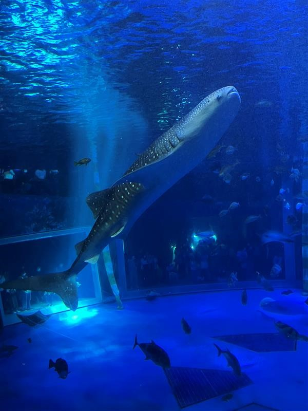
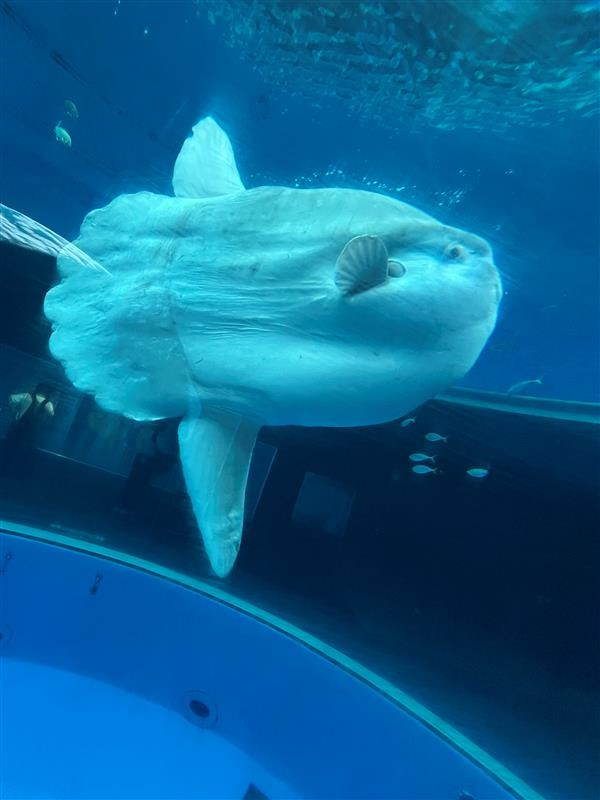
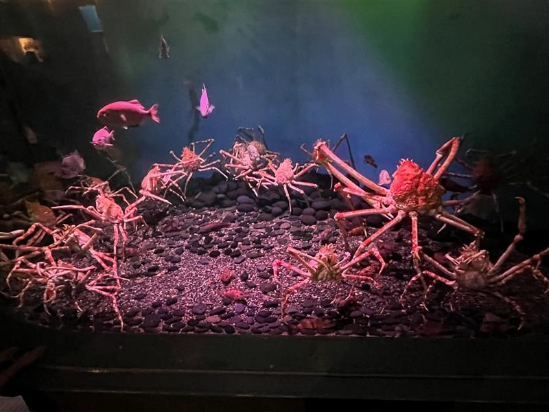
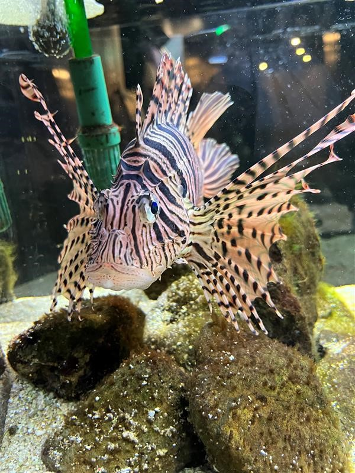
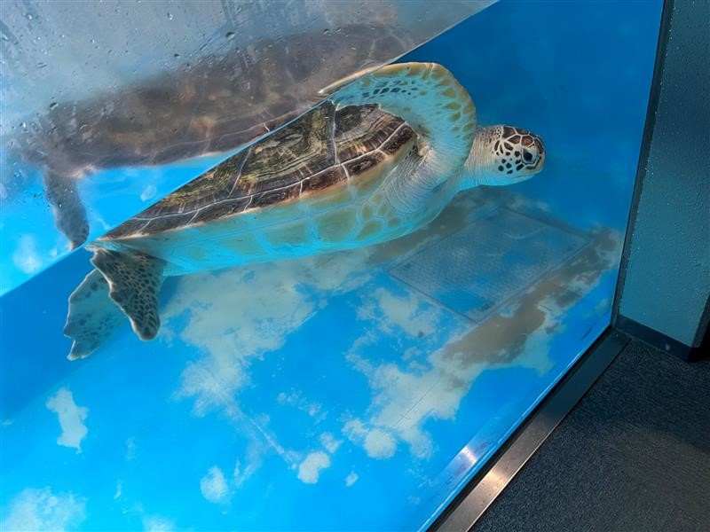

今まで見た中で驚いた生き物ランキング
-

ジンベエザメ
-

マンボウ
-

タカアシガニ
第１位 ジンベエザメ
体長の大きさと食事内容にとても衝撃を受けたので第１位にランクイン！実は、ジンベイザメは世界最大の魚類と言われています。しかし、世界最大の体長と言われているにも関わらず小さなプランクトンやエビを食べています。目に見えないような小さな域元たちを食べているにも関わらず、この大きさです！！そして、大きな体とは違ってかわいらしい丸い目と水玉模様にも注目してほしい。性格も穏やかで、海の中をゆったりと泳いでいます。そんな姿を想像したら、海のアイドルみたいですね。
第２位 マンボウ
すごく特徴的な形をしていて、フグと同じ仲間だということに衝撃を受けたので第２位にランクイン！マンボウは、鰭が長くおなかを守る骨がないという変わった形をしています。フグのように体を大きくする能力はないのにフグの仲間なのです。マンボウは、すごくストレスに弱いといわれていますが、実際はそこまでストレスに弱いようではないみたいです。マンボウは、まだまだ謎多き生き物でとても面白い生き物なのです。
第３位 タカアシガニ
大きさともし１人で食べていいよと言われたら幸せな気持ちになるということから第３位にランクイン！タカアシガニは世界一大きいカニとしてギネスブックにも認定されているほど大きくギネスブックには最大の記録で、５．７９メートルとなっています。しかし、最近ではそこまで大きな個体はほとんど捕獲されておらず４メートルほどの大きさほとんどのようです。４メートルもの大きさのカニを食べれるとなれば、１杯で十分おなかがいっぱいになりそうですね！味は、普通のカニと変わりないとか、、、実際に食べたことがないので食べてみたいな。
～番外編～あと少しでランクインしそうだった生き物たち
ハナミノカサゴ
ハナミノカサゴは、すごくきれいな見た目をしていて白い体にストライプのような模様が特徴的です。しかし、そんなきれいな体には、毒の棘があるのです。この棘に刺されてしまうと、すぐに激痛が走りその痛みが長く続くといわれています。刺されたことがないのでどれぐらい痛いのかはわかりません。魚界で一番きれいなバラには棘があるという言葉が似あうかもしれないですね。
ウミガメ
ウミガメの平均寿命は、種類にもよりますが、長い種類だと８０年も生きることができるらしいです。今までの中で一番最高寿命はアオウミガメで、２００年も生きたらしいです。